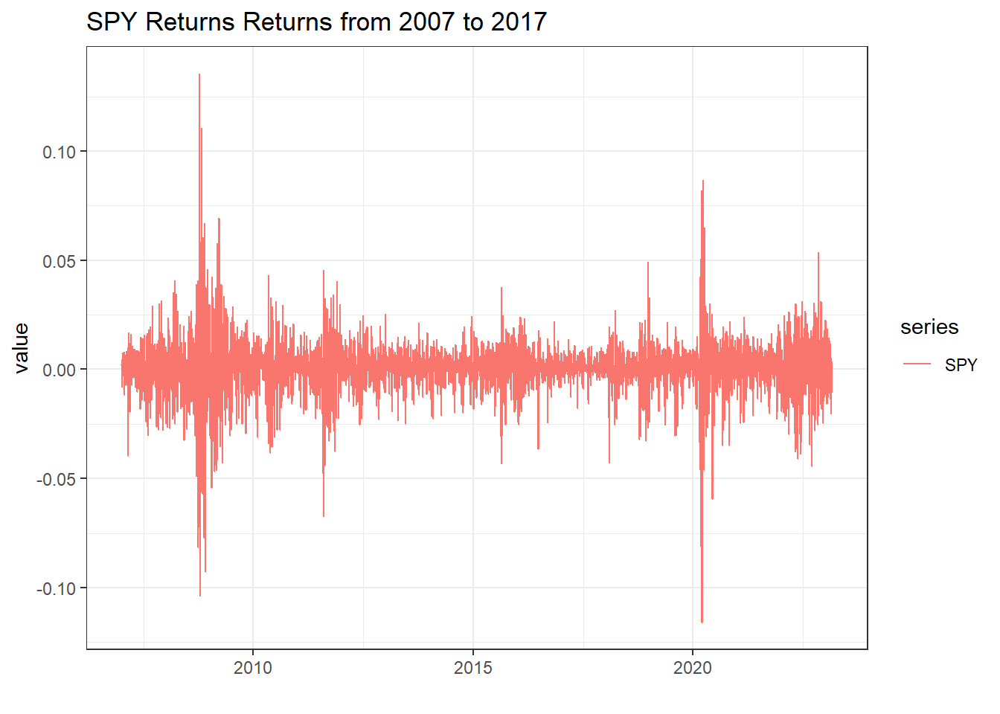
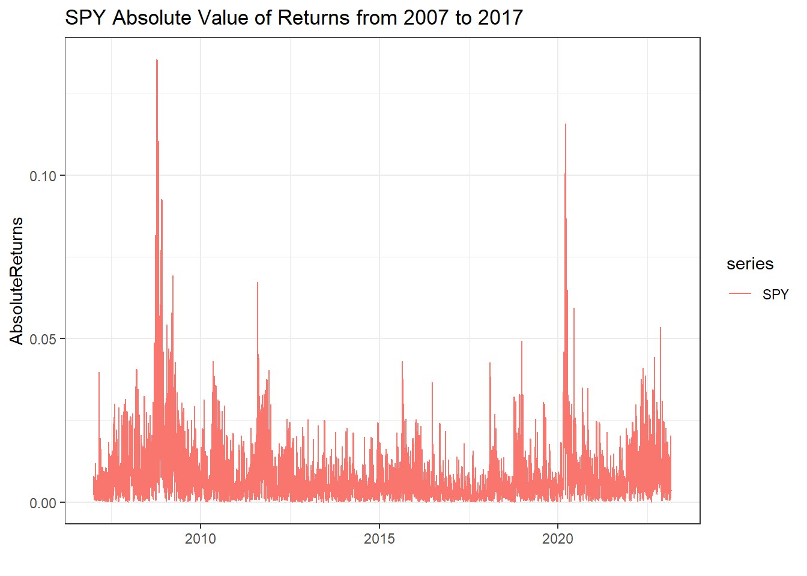
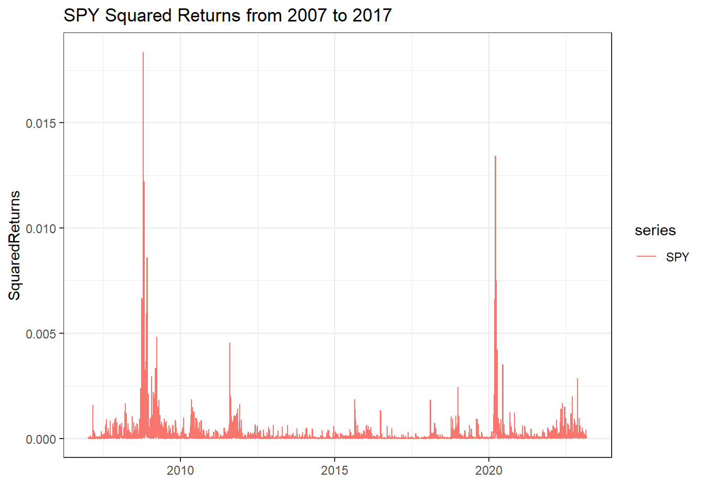
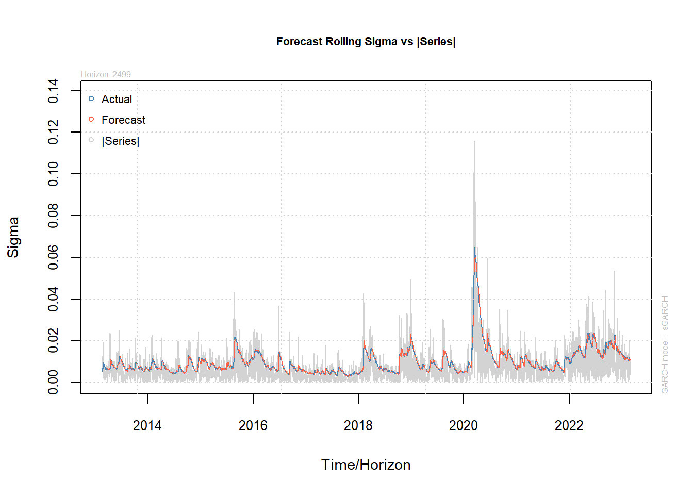

Basic Time-Series Analysis: Modeling Volatility (GARCH)
This post is the third in a series explaining Basic Time Series Analysis. Click the link to check out the first post which focused on stationarity versus non-stationarity, and to find a list of other topics covered. As a reminder, this post is intended to be a very applied example of how use certain tests and models in time-sereis analysis, either to get someone started learning about time-series techniques or to provide a big-picture perspective to someone taking a formal time-series class where the stats are coming fast and furious. As in the first post, the code producing these examples is provided for those who want to follow along in R. If you aren’t into R, just ignore the code blocks and the intuition will follow.
In this post we will learn a standard technique for modelling volatility in a series of prices, the generalized auto-regressive conditional heteroskedasticity (GARCH). We build on the previous post, Basic Time-Series Analysis, Single Equation Models (ARIMA), where we learned the useful techniques of using recent returns (AR) and residuals (MA) to explain price returns.
The idea of the GARCH model of price volatility is to use recent realizations of the error structure to predict future realizations of the error structure. Put more simply, we often see clustering in periods of high or low volatility, so we can exploit the recent volatility to predict volatility in the near future.
Continuing the examples in previous posts, we will use SPY prices to illustrate volatility modeling. The plot below shows SPY price returns from 2007 through 2017.
# If you are following along in R, uncomment the next lines and run once to install the required packages
# install.packages('ggplot2')
# install.packages('xts')
# install.packages('quantmod')
# install.packages('broom')
# install.packages('rugarch')
# install.packages('tibble')
library(quantmod)
library(ggplot2)
library(broom)
getSymbols(c('SPY'))[1] "SPY"SPY <- SPY$SPY.Adjusted
SPYRet <- log(SPY) - log(lag(SPY))
SPYRet_xts <- SPYRet
colnames(SPYRet) <- c('SPY')
SPYRet <- tidy(SPYRet)
ggplot(SPYRet, aes(x = index, y = value, color = series)) +
geom_line() +
theme_bw() +
labs(title = "SPY Returns Returns from 2007 to 2017", x = "")
As a reminder, the over-arching goal of of this and the previous posts has been to model the changing mean and variance of the price return series.
\[r^{SPY}_t \sim N(\mu_t, \sigma_t^2)\] The previous post used the ARIMA model to give structure to the changing mean of the series of price returns. Since the ARIMA model assumed constant variance, and the figure of SPY returns clearly has changing variance over time, this is something that can be improved upon, and the GARCH model is one way of accomplishing this.
Next, we will go through two ways that are commonly used to visualize the changing variance of returns. These are plotting the absolute value of price returns,
\[\left| r^{SPY}_t \right|, \]
or the square of price returns,
\[\left( r^{SPY}_t \right)^2.\]
Both cases make sense since the variance is always a positive number, and influenced by deviations from the mean. This is only true, of course, if we know that the return series has mean 0, \(r^{SPY}_t = 0 + \epsilon_t\). If this is true, then the average of squared returns is the sample variance,
\[\hat{\sigma}_t^2 = \sum_1^{n} \left( r^{SPY}_t \right)^2.\]
In price data, percent returns are almost have a mean very near to 0. If the mean return is non-zero, then we can just plot \(\left( r^{SPY}_t - \mu\right)^2\), or use the squared errors from an ARIMA model. Since we did not find very strong ARMA effects in the previous post, and especially since the intercept (mean) was zero, we can get a good sense of daily variance of SPY price returns by simply plotting daily squared returns or daily absolute value of returns.
library(tibble)
SPYRet <- add_column(SPYRet, SquaredReturns = SPYRet$value^2, AbsoluteReturns = abs(SPYRet$value))
ggplot(SPYRet, aes(x = index, y = AbsoluteReturns, color = series)) +
geom_line() +
theme_bw() +
labs(title = "SPY Absolute Value of Returns from 2007 to 2017", x = "")
ggplot(SPYRet, aes(x = index, y = SquaredReturns, color = series)) +
geom_line() +
theme_bw() +
labs(title = "SPY Squared Returns from 2007 to 2017", x = "")
The GARCH Model of Volatity
The plain vanilla (there are sooo many variations of the GARCH model) GARCH model is as follows:
\[\begin{align} r_t &=\mu+\varepsilon_t \\ \varepsilon_t &= \sigma_t.z_t \\ \sigma_t^2 &=\omega + \alpha_1\sigma_{t-1}^2 + \beta_1\varepsilon_{t-1}^2\\ z_t &\sim \mathcal{N}(0,1). \end{align}\]The first line is an equation to model the mean. As presented here there are no ARMA effects, but they could easily be thrown in if you find they are important. There is only an intercept and an error term. The next three lines put more structure on the error term, but it can be confusing what is going on here.
I find the second line particularly confusing. Why do we multiply two things to get \(\epsilon_t\) rather than add like you would normally see in a regression error term?
To see this, it is important to keep the goal in mind here. We are looking for a model that will give us a changing variance of \(r^{SPY}_t\). Namely, to find a model for \(r^{SPY}_t\) that has the following basic form:
\[r^{SPY}_t \sim \mathcal{N}(\mu, \sigma_t^2)\]
So if the basic return model is \(r^{SPY}_t =\mu+\varepsilon_t\), it better be the case that \(Var(\mu+\varepsilon_t) = \sigma_t^2\).
The next steps rely on the properties of the variance of random variables. Specifically, if \(a\) and \(b\) are a constants and \(X\) is a random variable, \(Var(a + bX) = b^2Var(X)\).
\[\begin{align} Var(r^{SPY}_t) &= Var(\mu+\varepsilon_t) \\ &= Var(\varepsilon_t) \end{align}\]So if we come up with a model for \(\varepsilon_t\) so that it’s variance depends on recent volatility and is big when recent volatility is big and is small when recent volatility is small, we will have created a model of conditional heteroskedasticity.
Consider the second line in the GARCH model.
\[\varepsilon_t = \sigma_t.z_t\]
Notice that \(\sigma_t\) is a constant, it is just a linear combination of past \(\sigma^2\)’s and past \(\epsilon^2\)’s, so it is known at time t.
\[\begin{align} Var(r^{SPY}_t) &= Var(\mu+\varepsilon_t) \\ &= Var(\varepsilon_t) \text{ since } \mu \text{ is a constant}\\ &=Var(\sigma_t, z_t) \\ &=\sigma_t^2Var(z_t) \text{ since } \sigma^2_t \text{ is a constant}\\ &=\sigma_t^2 \end{align}\]The last line follows since \(z_t \sim N(0, 1)\), and the \(Var(z_t) = 1\). So in the second equation of the GARCH model, multiplying the \(\sigma_t\) and the \(\epsilon_t\) takes advantage of the properties of variance to get just what we wanted, conditional variance of \(r^{SPY}_t\) that will be big when recent volatility is big and small when recent volatility is small. That last part follows because of how the \(\sigma^2_t\) is consructed in the third line of the GARCH model, \(\sigma_t^2 =\omega + \alpha_1\sigma_{t-1}^2 + \beta_1\varepsilon_{t-1}^2\).
Estimating a GARCH Model
The code below uses the rugarch R package to estimate a GARCH(p = 1, q = 1) model. Note that the p and q denote the number of lags on the \(\sigma^2_t\) and \(\epsilon^2_t\) terms, respectively.
The first command asks it to specify a plain vanilla GARCH by model = "sGARCH". It asks it to use an ARMA(1, 1) for the returns model by armaOrder = c(1, 1), include.mean = TRUE. We ask it to use the \(\mathcal{N}(0, 1)\) distribution for the \(z_t\)’s with the distribution.model = "norm". The second command asks it to fit the model. The output is printed below the code.
The main model output is displayed under ‘Optimal Parameters’. The mu, ar1 and ma1 coefficients are from the mean model (ARMA(1, 1)). and the omega, alpha1, and beta1 are coefficient estimates from the \(\sigma_t^2 =\omega + \alpha_1\sigma_{t-1}^2 + \beta_1\varepsilon_{t-1}^2\) equation of the main GARCH model. Under ‘Robust Standard Errors’ are the same coefficient estimates, but the standard errors are widened to account for the possibility that our distributional assumption is wrong. Notice that the estimates are about the same, but the p-values are all bigger, and in the case of alpha1 it becomes no longer statistically significant with the robust standard errors.
library(rugarch)
garch11 <- ugarchspec(variance.model = list(model = "sGARCH", garchOrder = c(1, 1)),
mean.model = list(armaOrder = c(1, 1), include.mean = TRUE),
distribution.model = "norm")
garchfit <- ugarchfit(spec = garch11, data = SPYRet_xts["2007-02-01/"], solver = "hybrid")
garchfit
*---------------------------------*
* GARCH Model Fit *
*---------------------------------*
Conditional Variance Dynamics
-----------------------------------
GARCH Model : sGARCH(1,1)
Mean Model : ARFIMA(1,0,1)
Distribution : norm
Optimal Parameters
------------------------------------
Estimate Std. Error t value Pr(>|t|)
mu 0.000726 0.000153 4.755238 0.000002
ar1 0.936693 0.006192 151.274139 0.000000
ma1 -0.962207 0.001802 -534.051959 0.000000
omega 0.000000 0.000005 0.020075 0.983984
alpha1 0.103081 0.092193 1.118101 0.263524
beta1 0.909234 0.075771 11.999714 0.000000
Robust Standard Errors:
Estimate Std. Error t value Pr(>|t|)
mu 0.000726 0.019020 0.038189 0.969537
ar1 0.936693 0.307717 3.044003 0.002335
ma1 -0.962207 0.224501 -4.285978 0.000018
omega 0.000000 0.000705 0.000137 0.999891
alpha1 0.103081 13.472230 0.007651 0.993895
beta1 0.909234 11.079444 0.082065 0.934595
LogLikelihood : 12972.04
Information Criteria
------------------------------------
Akaike -6.4077
Bayes -6.3984
Shibata -6.4077
Hannan-Quinn -6.4044
Weighted Ljung-Box Test on Standardized Residuals
------------------------------------
statistic p-value
Lag[1] 1.096 0.2952
Lag[2*(p+q)+(p+q)-1][5] 2.585 0.7318
Lag[4*(p+q)+(p+q)-1][9] 5.364 0.3745
d.o.f=2
H0 : No serial correlation
Weighted Ljung-Box Test on Standardized Squared Residuals
------------------------------------
statistic p-value
Lag[1] 3.336 0.067790
Lag[2*(p+q)+(p+q)-1][5] 11.377 0.004054
Lag[4*(p+q)+(p+q)-1][9] 13.543 0.007969
d.o.f=2
Weighted ARCH LM Tests
------------------------------------
Statistic Shape Scale P-Value
ARCH Lag[3] 0.4719 0.500 2.000 0.4921
ARCH Lag[5] 3.9631 1.440 1.667 0.1773
ARCH Lag[7] 4.4333 2.315 1.543 0.2884
Nyblom stability test
------------------------------------
Joint Statistic: 315.813
Individual Statistics:
mu 0.09393
ar1 0.07295
ma1 0.12386
omega 41.18861
alpha1 0.04252
beta1 0.02114
Asymptotic Critical Values (10% 5% 1%)
Joint Statistic: 1.49 1.68 2.12
Individual Statistic: 0.35 0.47 0.75
Sign Bias Test
------------------------------------
t-value prob sig
Sign Bias 4.089 4.420e-05 ***
Negative Sign Bias 1.434 1.516e-01
Positive Sign Bias 1.145 2.522e-01
Joint Effect 30.689 9.886e-07 ***
Adjusted Pearson Goodness-of-Fit Test:
------------------------------------
group statistic p-value(g-1)
1 20 203.2 7.697e-33
2 30 249.2 7.340e-37
3 40 265.7 1.589e-35
4 50 300.1 8.760e-38
Elapsed time : 3.790599 Now let’s use the rugarch’s standard functionality to use this estimated model to produce rolling forecasts of \(\sigma_t\) and plot them versus \(\left| r^{SPY}_t \right|\).
spec <- getspec(garchfit)
setfixed(spec) <- as.list(coef(garchfit))
garchforecast1 <- ugarchforecast(spec, n.ahead = 1, n.roll = 2499, data = SPYRet_xts["2007-02-01/"], out.sample = 2500)
plot(garchforecast1, which = 4)
It looks like to me this model does a pretty good job of sensing how long a volatility spike will remain elevated, or rather modeling the path of a volatility spike back down to long-run mean levels. Since all econometric models use past values to predict current values, it cannot foresee the initial spike up in volatility.
That’s It!
Now you know the GARCH model for forecasting volatility. In the next post we will cover the multi-equation models, VAR and VECM, that are good for estimating the relationship among many variables.